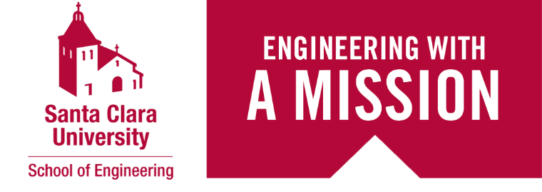

<article class="row">
    <article class="row">
        <article class="col-sm-5">
            <article class="row">
                <figure>
                    
                    <figcaption id="scucaption"><b>School of Engineering 500 El Camino Real Santa Clara, CA 95053</b></figcaption>
                </figure> 
            </article>
            <article class="row">
                <article id="scuvideo">
                    <h3 style="text-align: center; font-weight: 800;">VISIT SCU!<br></h3>
                    <video width="450px" height="275px" controls>
                        <source src="SCU_EDU_SITE_VIDEO.mp4" type="video/mp4">
                    </video>
                    <p style="color: gray; font-size: 13px;">
                        Video taken from SCU website. 
                        To Learn More about SCU : <a href="https://www.scu.edu/">Click Here</a>
                    </p>
                </article>
            </article>
        </article>
        <article class="col-sm-4" id="VnM">
            <h3 style="font-weight: 800; font-size: 35px;">Some of my favourite courses are:</h3>
            <p style="font-size: 15px;">
                <table>
                    <tr>
                        <td>COEN 315: Web Architecture & Protocols</td>
                    </tr>
                    <tr>
                        <td>COEN 281: Pattern Recognition & Data Mining</td>
                    </tr>
                    <tr>
                        <td>COEN 279: Design and Analysis of Algorithms</td>
                    </tr>
                    <tr>
                        <td>COEN 280: Database Systems</td>
                    </tr>
                </table>
            </p>
        </article>
        <article class="col-sm-2" id="core">
                <h3 style="font-weight: 800;">Core Values of SCU</h3>
                <p style="font-size: 20px;">
                    Based on our Vision and Mission, our values, known as iCARE, are:<br>
                    <b>integrity </b> - in the pursuit of knowledge<br>
                    <b>Collaboration</b> - between each other, across disciplines, and with Silicon Valley and beyond<br>
                    <b>Aspiration</b> - for excellence in education, research, and service <br>
                    <b>Respect</b> - and understanding of our differences among students, faculty, and staff <br>
                    <b>Exploration</b> - of the frontiers of engineering by research and innovation <br>
                </p>
        </article>
    </article>
</article>